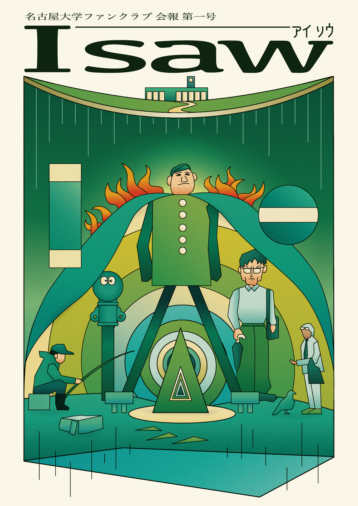

外野は、いま
24名になりました。
— Twenty-four kept watching.
2026年10月、名古屋大学ファンクラブは発足した。卒業生を中心とする会員はLINEグループに集い、名古屋大学にまつわる出来事を日々交換している。
2026年5月8日現在、会員は24名。広報も、勧誘もしない。けれども、観察は静かに続いている。
会の活動は、(一)LINE上での交換、(二)会報「I saw」の編集と発行、(三)ときに行われる東山キャンパス周辺の散歩、の三つが柱である。
本日付の会報は第一号にあたる。96ページ、私家版、非売品。会員それぞれが「私が見た名大」を寄せ合った記録集である。
A LETTER FROM THE PRESIDENT
会長より、まえがき。
名古屋大学ファンクラブは、2026年10月に発足した、卒業生を中心とする小さな会です。会員は2026年5月8日現在で24名。LINEグループに集まって、名古屋大学にまつわる出来事や話題を、ひそひそと交換しています。
私たちは、急ぎません。誇張もしません。ただ、長く、見続けようとしています。文化とは、続くもの／続けることである——これは、第一号の編集中に幾度も交わされた言葉です。
この会報「I saw（アイソウ）」は、その記録の最初の一冊です。お楽しみいただければ幸いです。
— yours, the president

The bulletin
会報『I saw』
— 「私が見た名大」
会員それぞれが、自分なりに名古屋大学を「見た」記録を寄せ合った、私家版の冊子です。第一号は2026年5月、24人の会員のもとへ届きました。
記録 — 会のあゆみ
- 2026.10.04 会発足。LINEグループ作成。 №001
- 2026.11.21 初回会合。会報の構想を話し合う。 №002
- 2026.12.08 東山キャンパス散歩。豊田講堂前にて記念写真。 №003
- 2026.05.07 会報「I saw」第一号、入稿。 №006
- 2026.05.08 会員、24名となる。 №007
§ 05 · JOIN
あなたも、外野の、ひとりに。
— Become a kind outsider.
卒業生でも、現役生でも、まったく無関係の方でも。「気にし続ける」気持ちさえあれば、それで十分です。広報も、勧誘もしません。あなたの参加を、静かにお待ちしています。